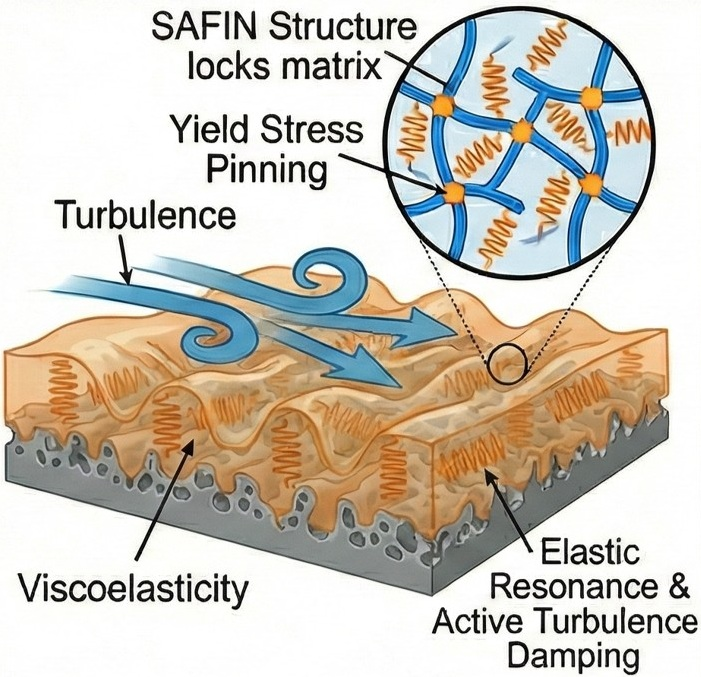

Viscoelastic Oil-Infused Surfaces for Durable Flow Control

Lubricant-infused surfaces can reduce friction by replacing direct liquid-solid contact with a mobile liquid interface. Their long-term performance, however, is limited by lubricant redistribution and depletion under sustained hydrodynamic forcing. Once the infused liquid is displaced from the texture, the surface may progressively lose its slip and drag-reducing functionality.
I have proposed a research program investigating whether lubricant rheology can be designed together with surface architecture to improve interfacial stability and functional lifetime. The concept treats the infused liquid not merely as a passive coating, but as an active design variable whose response to flow may influence retention, deformation, and recovery within the manufactured texture.
Engineering Challenge
Lubricant-infused surfaces may exhibit strong initial slip, but sustained shear can redistribute or remove the infused liquid and progressively expose the underlying solid texture. Improving durability therefore requires the lubricant and the manufactured surface to be designed as a coupled system rather than optimised independently.
Research Principle
The proposed program investigates how engineered surface architecture and lubricant rheology jointly determine interfacial deformation, lubricant transport, retention, and hydrodynamic performance. Experiments and physics-based models will connect local depletion mechanisms with component-scale drag and functional lifetime.
↓
Retention + Performance + Lifetime
Rather than optimising initial drag reduction alone, the research focuses on the conditions that determine whether interfacial functionality persists under extended operation. Its broader aim is to develop design principles for durable liquid-infused interfaces in maritime transport, industrial fluid handling, and other systems in which frictional losses and surface degradation increase energy consumption.
Proposed Research Workflow
-
Surface manufacture & characterisation:
Manufacture textured surfaces with controlled architectures and quantify their measured geometry, wetting behaviour, and lubricant-storage characteristics. -
Lubricant rheology:
Characterise how candidate lubricants respond to deformation and flow, treating rheology as an engineering design variable. -
Depletion imaging:
Use the optically accessible Taylor–Couette platform to observe lubricant redistribution, depleted-region formation, and progressive failure under controlled shear. -
Geometry-resolved modelling:
Reconstruct measured topographies from AFM data and simulate two-phase flow within the near-wall viscous sublayer under imposed shear. -
Performance & lifetime assessment:
Connect local lubricant retention and depletion with changes in interfacial mobility, drag-reduction performance, and functional lifetime. -
Design refinement:
Identify surface-lubricant combinations that merit further component-scale evaluation for industrial translation.
Integrated Experimental & Computational Program
The program establishes an integrated design-to-performance pipeline combining multi-scale fabrication, optical diagnostics, non-Newtonian rheometry, and high-performance parallel computing:
- Manufacture and multi-scale characterisation of micro- and nano-textured functional surfaces;
- Formulation and rheological characterisation of tailored non-Newtonian infused liquids;
- Time-resolved optical measurement of lubricant redistribution and depletion fronts under shear;
- AFM-informed, two-phase computational fluid dynamics (CFD) modelling executing on supercomputing infrastructure;
- Controlled Taylor–Couette flow experiments providing well-defined annular shear environments;
- Comprehensive hydrodynamic performance, drag reduction, and functional durability assessment.